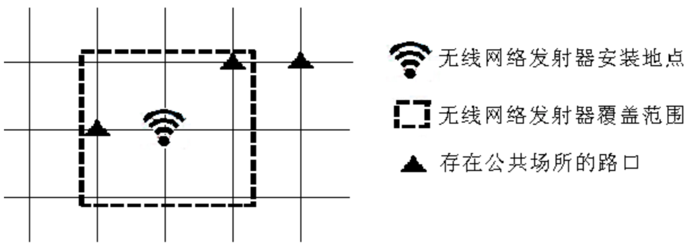

随着智能手机的日益普及，人们对无线网的需求日益增大。某城市决定对城市内的公共场所覆盖无线网。
假设该城市的布局为由严格平行的 129 条东西向街道和 129 条南北向街道所形成的网格状，并且相邻的平行街道之间的距离都是恒定值 1。东西向街道从北到南依次编号为 0,1,2…128，南北向街道从西到东依次编号为 0,1,2…128。
东西向街道和南北向街道相交形成路口，规定编号为 $x$ 的南北向街道和编号为 $y$ 的东西向街道形成的路口的坐标是 $(x, y)$。 在某些路口存在一定数量的公共场所。
由于政府财政问题，只能安装一个大型无线网络发射器。该无线网络发射器的传播范围是一个以该点为中心，边长为 $2*d$ 的正方形。传播范围包括正方形边界。
例如下图是一个 $d = 1$ 的无线网络发射器的覆盖范围示意图。

现在政府有关部门准备安装一个传播参数为 $d$ 的无线网络发射器，希望你帮助他们在城市内找出合适的安装地点，使得覆盖的公共场所最多。
 Comet OJ
Comet OJ